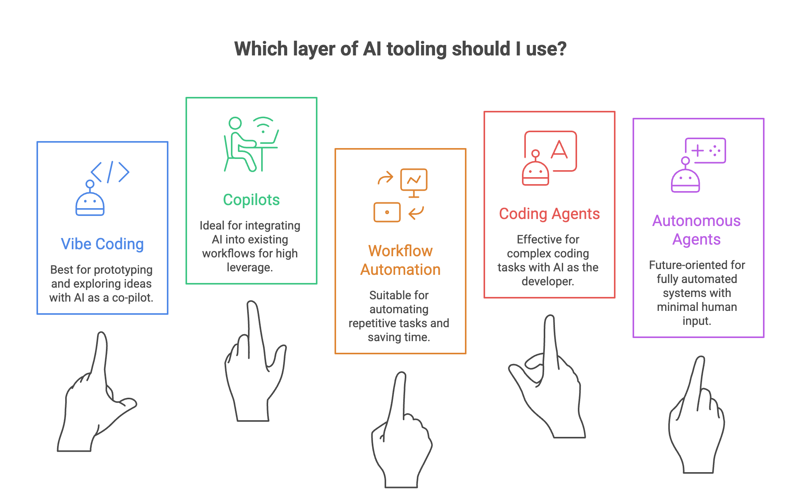

How I Think About AI Tooling
I ask myself this a lot: which AI tool should I use for this? And every time, the answer comes back to the same question — how much of the work do I want to hand off?
That's the right starting point. Not "which tool is best," but "where do I still need to be in the loop?"
I've been building with AI tools across my work as a product manager, a side hustler, and someone who genuinely likes figuring out systems. The pattern I keep seeing: AI tooling lives in layers. The further down the stack you go, the less you drive.

You're still driving — Vibe Coding
Tools like Cursor, Replit, or Claude's artifact builder let you build by describing what you want. You type in plain language. The AI writes the code. You react, adjust, iterate. The human is in the driver's seat. The AI is a fast co-pilot.
This layer is great for prototyping and exploring ideas — building things you couldn't build before without a developer. The risk: you can ship fast without really understanding what you shipped.
You set the direction — Copilots
Here the AI works alongside you inside your existing tools. GitHub Copilot in your editor, Claude inside a shared workspace, Notion AI, Microsoft Copilot in Excel. You're still making the calls. The AI handles drafting, suggesting, and executing steps you define. It doesn't act on its own.
This is where most knowledge workers will spend most of their time. High leverage without high risk. You stay accountable.
You define the rules — Workflow Automation
Now we're moving away from real-time collaboration into systems that run without you watching. Tools like n8n, Zapier, or Oracle Integration Cloud connect apps, trigger actions, and move data based on rules you set up ahead of time.
This is where the return on investment gets serious. One workflow you build once can save hours every week. You're not doing tasks anymore. You're designing systems.
You define the goal — Coding Agents
Tools like Claude Code, OpenAI Codex, and Devin let you hand over an entire goal — not just a task. "Build me a script that does X." The agent figures out the steps, writes the code, runs it, checks the output, and iterates.
You're not driving. You're the product owner. The skill isn't knowing the most code — it's writing clear briefs and knowing what "done" actually looks like.
You set the mission — Autonomous Agents
We're not fully here yet, but it's coming. This is where an agent holds memory, uses tools, makes decisions across time, and loops until the goal is met — minimal input from you. Early versions already exist: agents that browse the web, manage inboxes, run multi-step research tasks.
What used to take a team — or a very organized solo operator — will soon be something you configure once and review weekly.
The framework in one line
The further down the stack, the less you drive — and the more important it becomes to think clearly about what you actually want.
Vibe coding rewards experimentation. Copilots reward focus. Automation rewards system thinking. Coding agents reward clarity of intent. Autonomous agents reward trust — and judgment about when to take back control.
You don't have to pick one layer. The best builders move between all of them depending on the task. But knowing which layer you're on changes how you use the tool — and how seriously you take the output.
Comparing AI tools only makes sense when you know which layer you're building on. The one thing I'd tell a colleague: stop asking which AI tool is best. Start asking how much of the loop you want to keep.
Once you know which layer you're on, the next question is how involved to stay within it. I wrote about that in The Cockpit Rule — a framework for knowing when to let AI fly, when to collaborate, and when to take manual control.